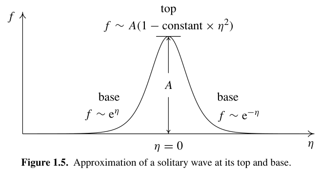

The Direct Method in Soliton Theory: Hirota 方法的简要笔记翻译补全*
Table of Contents
- 1. Foreword 前言
- 2. Preface 序言
- 3. 孤子方程的双线性化 Bilinearization of soliton equations
- 3.1. Solitary waves and solitons 孤立波与孤子
- 3.2. 非线性和色散
- 3.3. Solutions of nonlinear differential equations 非线性微分方程的解
- 3.4. Linearization of nonlinear differential equations 非线性微分方程线性化
- 3.5. The D-operator, a new differential operator D 算子
- 3.6. Bilinearization of nonlinear differential equations 非线性微分方程双线性化
因为发现一个传输现象，想知道 NLSE 解的一些性质，著名的逆散射怪异（好像应用很少）复杂（复变很多），被推荐看这本，就针对性阅读一些部分。似乎网上中文相关很少（咋入门都这么困难呢），正好整理一下。目前感到书中很多内容比较容易读懂，作者似乎是物理友好，基本都把需要介绍的讲的很清楚。
配图挺好的，简单优雅
中文书： 达布变换－代入－引入 D 算子－摄动法展开－截断
以下为部分翻译总结
1. Foreword 前言
近半个世纪以来，非线性这个概念很重要…
研究可积的方法对比：两个极端
- 逆散射 (IST) 可以解初值，它用了强分析方法，需要限制性强的假定。
- 使用简单代换几乎得到许多常微分方程组形式解进而获得 行波解 （太平凡）。
Hirota 方法在两者之中，是受 IST 启发，却不用太强条件适用范围大于 IST ，不过往往得到较小的解集，多孤子解 (multi-soliton)情况。
在一些需要对孤子散射深刻理解的领域，使用双线性方法（即 Hirota 法）更加合适（中庸之道哉）。
没有英文书介绍，于是我们翻译了。 Hirota 教授生动详实地举例介绍了方法的动机应用…
Hirota 法又叫 bilinear (第一章说不是严格代数的双线性，接近于二次型，总之又一个两项组合特性) / direct(书中说日本叫这个，国外叫 Hirota)方法，以下简称 Hirota.
2. Preface 序言
全书总结章节概述
孤子 (soliton) 为一类特殊的孤立波 (solitary wave),即和另一个同类波相遇（分离）后不会被破坏（简单情况就保持原状）。起初是数值模拟给出它们的存在，但是否它的确可以保持原貌需要严格数学分析，为了阐明这一点，波的解是不可或缺的。
非线性偏微分方程的解是很难找的，并且求解方法往往不能广泛适用。一个通用有效的解法——Hirota(原文 direct) 就为此而生。
第一章：直观地说明孤立波形成和线性叠加原理失效的情况，在使用降阶摄动 (reductive perturbations) 中引入 Hirota 。介绍引入新因变量 (dependent variables) F,G 使用比 G/F 表示解。 过程中（为了简化表达），新的二元算子 D ( D-operator) 被定义。就此一般的非线性偏微分可转换为双线性。 借助 D 的特性，用传统摄动法求解双线性时会使得摄动展开在有限项截断，于是得到一个解 (exact solution)。 同时用 KdV 举例并证明作用后保持原形状。
第二章：数学补全，行列式和 pfaffians 为后文准备，零基础解释包会…
第三章：以 Hirota 视角讲孤子方程解的结构。对于就为繁琐方程基础底层—— pfaffian identities ，就此分析 KP, BKP, coupled KP, Toda lattice and Toda molecule equations
关于 pfaffians 和行列式 (determinants) 紧密相关。有时见定义一个 pfaffian 平方为反对称矩阵的行列式，但 pfaffians 并非特殊的行列式，而接近于行列式的一般情况。例如， Pl¨ucker relations 和 Jacobi identities 对 pfaffians 也成立，并进一步拓展为 pfaffian identities 。 承 Mikio Sato 教授发明的 Maya diagrams 方法， pfaffian identity 可被如下表达
第四章：对孤子理论贡献极大的 B¨acklund transformations 在双线性形式中生成
- IST 的 Lax 对
- 新孤子方程
- Mirua 变换
它对应与 D 算子的交换公式。将会先用 D 算子的交换公式的方法找 KdV 的 B¨acklund transformations ；之后讲 KdV 中的应用；说明 B¨acklund transformations 结构和其它方程结果，并说明所有 B¨acklund transformations 可以简化为 pfaffian identities
可惜篇幅有限不谈 Sato 学派 (Sato school (Professors Mikio Sato, Yasuko Sato, Masaki Kashiwara, Tet- suji Miwa, Michio Jimbo and Etsuro Date)) 研究的双线性形式的群理论， IST 大家都写了就略去。
The aim of this book is to inform the readers as briefly as possible about the beauty and conciseness of the mathematical rules underlying soliton equations.
3. 孤子方程的双线性化 Bilinearization of soliton equations
3.1. Solitary waves and solitons 孤立波与孤子
when surfing off a gently sloping beach, we often make use of a solitary wave
波－孤立波－孤子（与同类波相遇后不变）
Figure 1: 1.1 波列 1.2 孤立波
具有孤子解的波方程同时具有非线性和色散 (nonlinearity and dispersion)，下面说明它们对波的影响（故而为什么同时有）以及何种条件下孤立波可以存在。
3.2. 非线性和色散
3.2.1. 线性非色散波
普通波方程，将它展开，简化一下
\begin{gather*} \left(\frac{\partial^2}{\partial t^2}-v_0^2\frac{\partial^2}{\partial x^2}\right)f(x,t)=0 \tag{1.1} \\ \left(\frac{\partial}{\partial t}-v_0\frac{\partial}{\partial x}\right)\left(\frac{\partial}{\partial t}+v_0\frac{\partial}{\partial x}\right)f(x,t)=0\\ \left(\frac{\partial}{\partial t}+v_0\frac{\partial}{\partial x}\right)f(x,t)=0 \tag{1.2} \end{gather*}满足 1.2 的解一定满足 1.1, 1.1 有向左向右的行波解而 1.2 只有向右的行波解： \(f(x,t)=f(x-v_0t)\)
在具有周期性 1 的解中具有代表性的为平面波（解）： \(f(x,t)=\exp[\mathrm{i}(\omega t-kx)]\)
关于 ω 和 \(k\) 有 \(\omega=v_0k\) 此为 色散关系 ,在这里它是正比线性的。
线性色散关系的波为 非色散波 ,它的特征是初始脉冲若由多个 k 不同的平面波线性叠加，那么因为所有叠加的波传输速度一样，所以它的形状不会变（所有频率的移动速度相对一致）
3.2.2. 线性色散波
最简单例子：
\begin{equation} \tag{1.3} \left(\frac{\partial}{\partial t}+v_0\frac{\partial}{\partial x}+\delta\frac{\partial^3}{\partial x^3}\right)f(x,t)=0 \end{equation}代入平面波 \(f(x,t)\propto\exp[\mathrm i(\omega t-kx)]\)
得到 \(\omega=v_0k-\delta k^3\) 此时 ω 和 k 不是线性，故此时为 色散波 ，因为没有非线性项，记为 线性色散波 。 计算相速度和群速度：
\begin{gather*} v_p=\frac{\omega}{k}=v_0-\delta k^2\\ v_g=\frac{\partial\omega}{\partial k}=v_0-3\delta k^2 \end{gather*}若 \(\delta>0\) 两者将小于 \(v_0\) ，并和 k 相关，使得波会展宽不能保持初始形状。 所以， 线性色散波不能保持初始形状
3.2.3. 非线性无色散波
在 1.2 上作最简单的变化：
\begin{equation} \label{1.4} \left(\frac{\partial}{\partial t}+v(f)\frac{\partial}{\partial x}\right)f(x,t)=0 \qquad v(f)=v_0+\alpha f^m \end{equation}线性项乘上了 f 产生非线性项，其中波速 v 依赖于振幅 f。
1.4 它有形式解 \(f(x,t)=f(x-v(f)t)\) 。 由于振幅强度大时传播快，所以会发生形状变化，前峰变陡。
Figure 2: 初始对称波因为波矢与振幅相关导致变陡
在这种情况下，波快要被破坏前， \(|\frac{\partial f}{\partial x}|\gg 1\) (类比直线斜率无穷大)，此时 1.4 失效了（？），应当考虑 1.5
3.2.4. 非线性色散波
1.5 这个方程具有脉冲状的波解－孤立波解－传输中不改变形状。
前文已展现色散和非线性单独存在是无法形成孤立波。这里先简述同时存在而波形状稳定缘故之后用仔细数学处理。
若移动的波形状不变，那么至少波的顶峰 (top) 和底基 (base 自翻) 应当具有相同速度。方便起见引入新空间坐标
\begin{equation*} \eta=px-\Omega t \qquad v=\frac{\Omega}{p} \end{equation*}p 为自由变量 (free parameter)。
p 增大，波变尖。 因为波以恒定速度 v 传播，我们用 η 表达就很方便。 t=0 时， \(\eta=px\) η 与 x 正比； \(t\neq 0\) 正比于 \(x-vt\) 以 v 传播。（？固定标架）
设定在 η 的最大振幅为 \(A\) ，则顶峰附近 有二次近似 \(f\sim A(1-C\eta^2)\) （C 为常数）。故 \(\frac{\partial^3 f}{\partial x^3}\simeq 0\),去掉这项得到和 1.4 相同的方程。那么顶峰的速度为
\begin{equation} \tag{1.6} v=v_0+\alpha A^m \end{equation}在底基处，因为 f (振幅)很小可略去非线性项（ fm ）参考上文线性方程：
\begin{equation*} \tag{1.7} \left(\frac{\partial}{\partial t}+v_0\frac{\partial}{\partial x}+\delta\frac{\partial^3}{\partial x^3}\right)f(x,t)\sim0 \end{equation*}然后这里应当使用 \(f\sim\exp[\pm(px-\Omega t)]\) 进一步计算位于底基的群/相速度（因为它不是三角函数叠加形式而是类似于指数递减，总之看图说话）

代入指数表达式得到 非线性色散关系 \(\Omega=v_0p+\delta p^3\) 得到速度
\begin{equation*} v=\frac{\Omega}{p}=v_0+\delta p^2 \tag{1.10} \end{equation*} \begin{equation*} \delta p^2=\alpha A^m \end{equation*}上述讨论说明了不能直接用三角函数平面波解，而应当使用衰减的指数函数，实际上可以完整地展开为指数形式
\begin{equation*} f(x,t)\sim \varepsilon a_{1}\exp(\eta)+\varepsilon^{2}a_{2}\exp(2\eta)+\cdots \end{equation*}Hirota 就是借助像 \(f=G/F\) 的因变量变换找非线性微分方程的解。
不变的东西具有命名的价值
——米尔嘉
remark:如何说明展开式得到衰减指数：等比级数案例。后文再现～
3.3. Solutions of nonlinear differential equations 非线性微分方程的解
最后又得到上篇结论
依然研究，不过做变量代换，因此为简便先将方程写作
\begin{equation*} \tag{1.17} \left(\frac{\partial}{\partial t'}+v_0\frac{\partial}{\partial x'}+\alpha f^m\frac{\partial}{\partial x'}+\delta\frac{\partial^3}{\partial{x'}^3}\right)f(x',t')=0 \end{equation*}独立变量变换，原方程 \(x',t'\to x,t\)
\begin{equation} \tag{1.18} \begin{cases}x&=x'-v_0t'\\ t&=t' \end{cases} \Rightarrow \begin{cases}\frac{\partial}{\partial t'}&=\frac{\partial}{\partial t}-v_0\frac{\partial}{\partial x},\\\frac{\partial}{\partial x'}&=\frac{\partial}{\partial x}. \end{cases} \end{equation}代入化简：
\begin{equation*} \left(\frac{\partial}{\partial t}+\alpha f^m\frac{\partial}{\partial x}+\delta\frac{\partial^3}{\partial x^3}\right)f(x,t)=0 \end{equation*}做一个 相似变换 (similarity transformation) 引入变量： \(t=\varepsilon^2\tau,x=\varepsilon\xi \quad \varepsilon=const\)
\begin{equation*} \left( \frac{\partial }{\partial \tau}+\varepsilon^2\alpha f^m \frac{\partial }{\partial \xi}+\delta \frac{\partial^3 }{\partial \xi^3} \right)f(\varepsilon\xi,\varepsilon^3\tau)=0 \end{equation*}这是再用因变量变换 \(f\left(\varepsilon\xi,\varepsilon^{3}\tau\right)=\varepsilon^{-2/m}f'(\xi,\tau)\) 可以得到
\begin{equation*} \left(\frac{\partial}{\partial\tau}+\alpha(f')^m\frac{\partial}{\partial\xi}+\delta\frac{\partial^3}{\partial\xi^3}\right)f'(\xi,\tau)=0 \end{equation*}也就是说，如果把 1.20 的 f 做代换
\begin{equation*} f'(\xi,\tau)=\varepsilon^{\frac{2}{m}}f(\varepsilon\xi,\varepsilon^3\tau) \end{equation*}那么 f' 也满足同样的方程。 以上就是相似代换。
如果有行波解 \(f(x-vt)\) 则 \(\varepsilon^{2/m}f(x-\varepsilon^2vt)\) 也是解。故从孤立波角度，如果波振幅增大 \(\varepsilon^{2/m}\) 倍，速度将增大 \(\varepsilon^2\) 倍。
（这是相似变换得到的）
关于速度和振幅的关系不使用相似变换也能得到。我们考虑在原方程情况下的孤立波 \(f(x-vt)\) 恒定速度，就有
\begin{equation*} \frac{\partial f}{\partial t}=-v \frac{\partial f}{\partial x} \end{equation*}代入化简；使用边界条件两边积分
\begin{gather*} \left((-v+v_{0})\frac{\partial}{\partial x}+\alpha f^{m}\frac{\partial}{\partial x}+\delta\frac{\partial^{3}}{\partial x^{3}}\right)f(x-vt)=0\\ \left[ \frac{\partial^n}{\partial x^n}f(x-vt)\to0\quad(x\to\pm\infty)\quad n=0,1,2,\ldots \right]\\ (-v+v_0)f+\frac{\alpha}{m+1}f^{m+1}+\delta\frac{\partial^2}{\partial x^2}f=0 \end{gather*}(中间为分部积分，条件作用？）
两边再乘 fx 积分使得只有 f'
\begin{equation*} (-v+v_0)f^2+\frac{2\alpha}{(m+1)(m+2)}f^{m+2}+\delta f_x^2=0 \end{equation*}取顶峰 \(f_{\max}\) 考虑，此处 \(f_x=0\) 去掉 \(\delta\) 项 可得到
\begin{equation*}\tag{1.32} v=v_0+\frac{2\alpha}{(m+1)(m+2)}f_{\max}^m \end{equation*}在已知原方程有解
\begin{equation*} f=A(\cosh\eta)^{-s},\quad\eta=px-\Omega t+\mathrm{constant} \end{equation*}其中 \(\Omega=v_{0}p+\delta s^{2}p^{3},v=\Omega/p=v_{0}+\delta s^{2}p^{2}\) and \(s=2/m\)
由 (1.32) \(A^m=(\delta/\alpha)(1+s)(2+s)p^{2}\) ，与之前 等式 可相类比。
用了代换得到速度和振幅关系
3.4. Linearization of nonlinear differential equations 非线性微分方程线性化
非线性下叠加原理 (superposition principle) 不成立，解难得。使用变换转换方程为线性的就很有帮助，可惜很难将方法分类 用几个例子说明一下
3.4.1. The Riccati equation
3.4.2. The Burgers equation
Cole–Hopf transformation : \(u=(\log f)_x=f_x/f\)
逆变换
3.4.3. The Liouville equation 不懂
3.4.4. Two-wave interaction equations
3.4.5. Hirota 的核心
双线性的方法
This method, through which we find solutions directly, without employing the inverse scattering method, will be referred to as the direct method. Outside of Japan it is called Hirota’s method.
KdV 为例子：
\begin{equation*} u_t+6uu_x+u_{xxx}=0 \end{equation*}大致过程： 摄动法展开（ \(\varepsilon\) 为小参数），代入
\begin{gather*} u=\varepsilon u_1+\varepsilon^2u_2+\varepsilon^3u_3+\cdots \\ \begin{aligned} &\left(\frac\partial{\partial t}+\frac{\partial^3}{\partial x^3}\right)u_1 =0, \\ &\left(\frac{\partial}{\partial t}+\frac{\partial^3}{\partial x^3}\right)u_2 =-6u_{1}u_{1x}, \tag{1.83b} \\ &\left(\frac\partial{\partial t}+\frac{\partial^3}{\partial x^3}\right)u_3 =-6(u_2u_{1x}+u_1u_{2x}), \end{aligned}\\ \vdots \end{gather*}取一个（非平面波的）指数解为 u1 代入 1.83b , a1 ,P 为任意参数
\begin{gather*} u_1=a_1\exp\eta,\quad\eta=Px-\Omega t,\quad\Omega=P^3,\\ \left(\frac{\partial}{\partial t}+\frac{\partial^3}{\partial x^3}\right)u_2=-6a_1^2P\exp2\eta \end{gather*}对于 u2 可以取 \(u_2=a_2\exp 2\eta, a_2=-a_1^2/P^2\) 代入 1.83c 得到 u3 线性方程， 最终以此得到如下形式的解：
\begin{equation*} u=\varepsilon a_1\exp\eta+\varepsilon^2a_2\exp2\eta+\varepsilon^3a_3\exp3\eta+\cdots \end{equation*}但 \(\eta\to\infty\) 可能会不收敛，为避免发散，可用 Pade 近似将 u 写作 G/F 比，不过这里 G,F 不好取。 另一种思路是用因变量代换 \(u=G/F\) 得到 F,G 的微分方程
将它代入 KdV
\begin{gather*} \begin{aligned} &u=\frac{G}{F}, \\ &u_{t} =\frac{G_{t}F-GF_{t}}{F^{2}}, \\ &u_{x} =\frac{G_{x}F-GF_{x}}{F^{2}}, \\ u_{xxx}& =\frac{G_{xxx}}{F}-\frac{3G_{xx}F_{x}+3G_{x}F_{xx}+GF_{xxx}}{F^{2}} \\ &+\:6\frac{G_xF_x^2+GF_{xx}F_x}{F^3}-\frac{GF_x^3}{F^4} \end{aligned}\\ \longrightarrow \begin{gathered} \frac{G_{t}F-GF_{t}}{F^{2}}+6\frac{G}{F}\frac{G_{x}F-GF_{x}}{F^{2}} \\ +\:\frac{G_{xxx}F-3G_{xx}F_{x}-3G_{x}F_{xx}-GF_{xxx}}{F^2} \\ +\:6\frac{FG_xF_x^2+FGF_{xx}F_x-GF_x^3}{F^4}=0. \end{gathered} \end{gather*}画蛇添足 Snake’s legs :计算机很方便
找可以等于0的项
分母为 F2 : \(G_tF-GF_t+G_{xxx}F-3G_{xx}F_x-3G_xF_{xx}-GF_{xxx}=0\) 但是对于一个解：
\begin{gather*} \begin{aligned}u&=\frac{2P^2\exp\eta}{(1+\exp\eta)^2},\\\eta&=Px-\Omega t,\end{aligned} \qquad\begin{aligned}\\&F=(1+\exp\eta)^2,\\&G=2P^2\exp\eta,\end{aligned} \end{gather*}不符合。 反而，这个解符合上式稍微变化：将第五项 \(-3G_xF_{xx}\) 变号的结果
\begin{equation*} \begin{aligned}&\frac{G_{t}F-GF_{t}+G_{xxx}F-3G_{xx}F_{x}+3G_{x}F_{xx}-GF_{xxx}}{F^{2}}\\&+6(G_{x}F-GF_{x})\frac{GF-(FF_{xx}-F_{x}^{2})}{F^{4}}=0,\end{aligned} \end{equation*}此处有双向奔赴，一则解恰巧满足一个形式，二则这个形式可以得到一个提出 G_xF-GF_x 的因子形式，不过这里省略了过程，可能是希望更快（神不知鬼不觉）显示出 D 算子作用后的 G_xF-GF_x 因子形式（似乎此处得到解耦形式并非最大目的）。
从而得到双线性解耦形式：
\begin{equation*} \begin{aligned} G_{t}F-GF_{t}+G_{xxx}F-3G_{xx}F_{x}+3G_{x}F_{xx}-GF_{xxx}=0,\\FF_{xx}-F_{x}^{2}-GF=0. \end{aligned} \end{equation*}这里的结果在结构上很特殊，就此 Hirota 考虑引入算子 D
我建议直接把 D 理解为特殊的微分二元运算符，定义为 $D(f,g)=f_xg-fg_x$ ,反 lebniz 性质\begin{gather*} D_{x}^{n}(a,b)\equiv\left(\frac{\partial}{\partial x}-\frac{\partial}{\partial y}\right)^{n}a(x)b(y)\bigg|_{y=x}=\frac{\partial^{n}}{\partial y^{n}}a(x+y)b(x-y)\bigg|_{y=0},\\D_{t}^{m}D_{x}^{n}(a,b)\equiv\left.\frac{\partial^{m}}{\partial s^{m}}\frac{\partial^{n}}{\partial y^{n}}a(t+s,x+y)b(t-s,x-y)\right|_{s=0,y=0} \end{gather*}
原书之后省略了算子之后的括号，只写作 $Df\cdot g$，但我认为形式上不省利于找到作用对象，故保留。
可导出一些简单结果：
\begin{equation*} \begin{aligned} &D_{x}(G\cdot F) =G_{x}F-GF_{x}, \\ &D_{x}^{3}(G\cdot F) =G_{xxx}F-3G_{xx}F_{x}+3G_{x}F_{xx}-GF_{xxx} \\ &D_{x}^{2}(F\cdot F) =2(F_{xx}F-F_{x}^2), \end{aligned} \end{equation*}上面的方程
\begin{equation*} \begin{aligned}(D_t+D_x^3)(G\cdot F)&=0,\\ D_x^2(F\cdot F)-2GF&=0.\end{aligned} \end{equation*}下面做另一个因变量代换
\begin{equation*} u=2(\log f)_{xx} \end{equation*}代入（？），得到双线性方程，取 c=0 写作 D 算子形式：
\begin{gather*} \frac{\partial}{\partial x}[(f_{xt}f-f_xf_t+f_{xxxx}f-4f_{xxx}f_x+3f_{xx}^2)/f^2]=0,\\ f_{xt}f-f_xf_t+f_{xxxx}f_x-4f_{xxxx}f_x+3f^2_{xx}=cf^2 \\ (D_xD_t+D_x^4)(f\cdot f)=0. \end{gather*}书注：
- 取 c 为0是找一个孤立波的方法
- 结果也可分解为 \(D_x(D_t+D_x^3)(f\cdot f)=0\) ……
使用摄动展开，代入上式
\begin{gather*} f=1+\varepsilon f_1+\varepsilon^2 f_2+\varepsilon^3f_3+\cdots\\ \begin{aligned} \varepsilon:&D_x(D_t+D_x^3)(f_1\cdot1+1\cdot f_1)&=0,\\\varepsilon^2:&D_x(D_t+D_x^3)(f_2\cdot1+f_1\cdot f_1+1\cdot f_2)&=0,\\\varepsilon^3:&D_x(D_t+D_x^3)(f_3\cdot1+f_2\cdot f_1+f_1\cdot f_2+1\cdot f_3)&=0,\end{aligned} \end{gather*}首先解 f1 即：
\begin{equation*} \frac{\partial}{\partial x}\left(\frac{\partial}{\partial t}+\frac{\partial^3}{\partial x^3}\right)f_1=0 \end{equation*}对应一个孤立波（不知道怎么看出来）的解是
\begin{equation*} f_1=\mathrm{e}^{\eta_1} \qquad \eta_1=P_1x+\Omega_1 t+\eta_1^0,\quad\Omega_1+P_1^3=0 \end{equation*}代入二式 f2 :
\begin{equation*} 2\frac{\partial}{\partial x}\left(\frac{\partial}{\partial t}+\frac{\partial^3}{\partial x^3}\right)f_2=-D_x(D_t+D_x^3)(f_1\cdot f_1). \end{equation*}右边是都是 D 算子的奇次方的同项作用为0，于是取 \(f_2=0\) 并就此截断（后面也不一定为0?）。故
\begin{equation*} f=1+\varepsilon f_1=1+\mathrm{e}^{\eta_1} \end{equation*}(将 ε 收到指数相位里（？）
进一步，这被认为给出拉一孤子解：
\begin{equation*} u=2[\log(1+\exp\eta_1)]_{xx}=\frac{2P_1^2\exp\eta_1}{(1+\exp\eta_1)^2}=\frac{P_1^2}{2}\sinh^2\frac{\eta_1}{2} \end{equation*}书注：
- \(\eta_1,P_1\) 前者定位置，后者定振幅
- D 的反对称使得可以在有限项截断…
要解二孤子解，对 f 使用线性叠加原理，取
\begin{equation*} f_1=\mathrm{e}^{\eta_1}+\mathrm{e}^{\eta_2} \quad \eta_{i}=P_{i}x+\Omega_{i}t+\eta_{i}^{0},\:\Omega_{i}+P_{i}^{3}=0\textrm{\ for\ }i=1,2. \end{equation*}在 f3 截断：
\begin{equation*} f=1+\varepsilon(\exp\eta_1+\exp\eta_2)+\varepsilon^2a_{12}\exp(\eta_1+\eta_2). \end{equation*}
画蛇添足
这就构成了核心部分
This is done because the author has often been unable to gather such information from mathematics books without reading them thoroughly.
本书省略很多计算，部分结果因此看起来颇为神奇。
总结直接法解方程：
- 摄动
- 有理分式比
- 取分子＝0的表达式
引出 D ,初看就是一个简化表达的算子，下面几章似乎在说明利用 D 可以展示方程的结构（在特定情况下）的统一性。
3.5. The D-operator, a new differential operator D 算子
种种数学性质，是一个微分、同时有反对称的特征的算子
作者承认二元算符标准形式写应该是 \(D_x^n(a(t,x),b(t,x))\) ，原书用，但我可能混用 (,) (⋅) D⋅
对比求（偏）导算符：
\begin{gather*} \left.\begin{aligned}&D_{x}a\cdot b=a_{x}b-ab_{x},\\&D_{x}^{2}a\cdot b=a_{xx}b-2a_{x}b_{x}+ab_{xx},\\&D_{x}^{3}a\cdot b=a_{xxx}b-3a_{xx}b_{x}+3a_{x}b_{xx}-ab_{xxx}.\end{aligned} \quad \right| \quad \begin{aligned} &\partial_{x}a\cdot b =a_{x}b+ab_{x}, \\ &\partial_{x}^{2}a\cdot b =a_{xx}b+2a_{x}b_{x}+ab_{xx}, \\ &\partial_{x}^{3}a\cdot b =a_{xxx}b+3a_{xx}b_{x}+3a_{x}b_{xx}+ab_{xxx}, \end{aligned} \end{gather*}于是可以二项式组合
\begin{equation*} (D_t+\varepsilon D_x)^n(a\cdot b)=D_t^n(a\cdot b)+n\varepsilon D_t^{n-1}D_x(a\cdot b)+\cdots+\varepsilon^nD_x^n(a\cdot b). \end{equation*} \begin{gather*} D_z^n(b\cdot a)=(-1)^nD_z^n(a\cdot b),\\ D_z^n(a,a)=0,\quad n=2N-1\\ D_z(a,b)=0 \Leftrightarrow a=Cb\\ D_z(D_za\cdot b)\cdot c+D_z(D_zb\cdot c)\cdot a+D_z(D_zc\cdot a)\cdot b=0 \end{gather*}最后一个式子和 Jacobi 恒等式： \([[a,b],c]+[[b,c],a]+[[c,a],b]=0\) ，深层可与李代数关联（原书有文献11-15）
做一个定义（原始位置： 3.5 ？似乎没用）
\begin{equation*} \begin{aligned} D_{z}=D_{t}+\varepsilon D_{x},\\\partial_{z}=\partial_{t}+\varepsilon\partial_{x}. \end{aligned} \end{equation*}换种方法（ 原来定义方法 还是建议记2次的形式导数中间为-，可以递归推出高阶下面有说明例子 3.5 ）也能定义 D 算子， δ 为参数：
\begin{equation*} \begin{aligned} \exp(\delta D_{z})(a(z)\cdot b(z))& =\left.\exp(\delta\partial_{y})a(z+y)b(z-y)\right|_{y=0} \\ &=a(z+\delta)b(z-\delta), \end{aligned} \end{equation*}对于各阶可微的 a,b ， \(a(z+\delta),b(z+\delta)\) Talyor 展开为（相当于在可微条件下解释上面的式子？）
\begin{equation*} \begin{aligned}&(1+\delta D_{x}+\frac{1}{2}\delta^{2}D_{x}^{2}+\frac{1}{6}\delta^{3}D_{x}^{3}+\cdots)(a(x)\cdot b(x))\\ &=[a+\delta a_{x}+\frac{1}{2}\delta^{2}a_{xx}+\cdots][b-\delta b_{x}+\frac{1}{2}\delta^{2}b_{xx}-\cdots].\end{aligned} \end{equation*} \begin{equation*} \begin{aligned}D_z^na\cdot b&=D_z^{n-1}D_za\cdot b\\&=D_z^{n-1}(a_z\cdot b-a\cdot b_z),\end{aligned} \end{equation*}性质继续：
\begin{gather*} D_z^n(\mathrm{e}^{p_1z},\mathrm{e}^{p_2z})=(p_1-p_2)^n \mathrm{e}^{(p_1+p_2)z}\\ \partial_z^n(\mathrm{e}^{p_1z}\cdot \mathrm{e}^{p_2z})=(p_1+p_2)^n \mathrm{e}^{(p_1+p_2)z},\\ D_z^n(\mathrm{e}^{p_1z}\cdot\mathrm{e}^{p_2z})=\frac{(p_1-p_2)^n}{(p_1+p_2)^n}\partial_z^n\mathrm{e}^{p_1z}\cdot\mathrm{e}^{p_2z}.\\ F(D_{t},D_{x},\ldots)(\mathrm{e}^{\eta_{1}}\cdot\mathrm{e}^{\eta_{2}})=\frac{F(\omega_{1}-\omega_{2},P_{1}-P_{2},\ldots)}{F(\omega_{1}+\omega_{2},P_{1}+P_{2},\ldots)}\\ \times F(\partial_{t},\partial_{x},\ldots)\mathrm{e}^{\eta_{1}+\eta_{2}}, \end{gather*} \begin{gather*} \begin{aligned} &D_{z}ab\cdot c=a_{z}bc+aD_{z}b\cdot c, \\ &D_{z}ab\cdot b=a_{z}b^{2}, \\ &D_{z}^{2}ab\cdot c=a_{zz}bc+2a_{z}D_{z}b\cdot c+aD_{z}^{2}b\cdot c, \\ &D_{z}^{2}ab\cdot b=a_{zz}b^{2}+aD_{z}^{2}b\cdot b, \\ &D_{z}^{2}ab\cdot cd=(D_{z}^{2}a\cdot c)bd+2(D_{z}a\cdot c)(D_{z}b\cdot d)+ac(D_{z}^{2}b\cdot d), \\ &D_{z}^{3}ac\cdot bc=(D_{z}^{3}a\cdot b)c^{2}+3(D_{z}a\cdot b)(D_{z}^{2}c\cdot c), \\ &D_{z}^{m}(\mathrm{e}^{pz}a(z)\cdot\mathrm{e}^{pzb(z)})=\mathrm{e}^{2pz}D_{z}^{m}(a(z)\cdot b(z)). \end{aligned} \end{gather*}书注：
The Schr¨odinger equation
\begin{equation*} \mathrm{i}\Psi_t+\Psi_{xx}-V\Psi=0, \end{equation*}Ginzburg–Landau
3.6. Bilinearization of nonlinear differential equations 非线性微分方程双线性化
3.6.1. Rational transformation 有理变换
KdV
3.6.1.1. NLS 非线性薛定谔
变换 \(\Psi=\frac{G}{F}\)
F 为实函数
\begin{equation*} [(\mathrm{i}D_t+D_x^2)G\cdot F]F^2-GF[D_x^2F\cdot F-2c|G|^2]=0. \end{equation*}双线性形式
\begin{gather*} \begin{aligned}(\mathrm{i}D_t+D_x^2)G\cdot F&=\lambda GF,\\D_x^2F\cdot F-2c|G|^2&=\lambda F^2.\end{aligned} \end{gather*}从第二个方程
\begin{equation*} |\Psi|^2=[(D_x^2F\cdot F)/F^2-\lambda]/(2c) \end{equation*}and so the choice of \(\lambda\) is determined by the value of \(|\Psi|^2\) at \(|x|=\infty\) , the function \(F\) and the sign of \(c\) These are envelope soliton solutions; in the case \(\lambda=0\) (and \(c>0\) ) \(\Psi\) is called a bright soliton, and in the case \(\lambda=1\) \((c<0)\)
Footnotes:
没有周期的有甚么例子么，既然这里说了周期